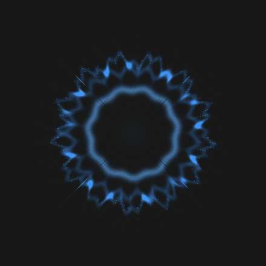
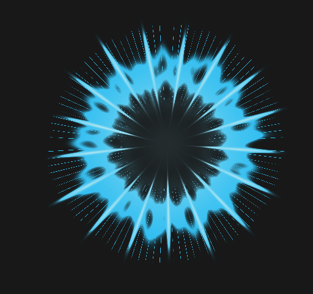
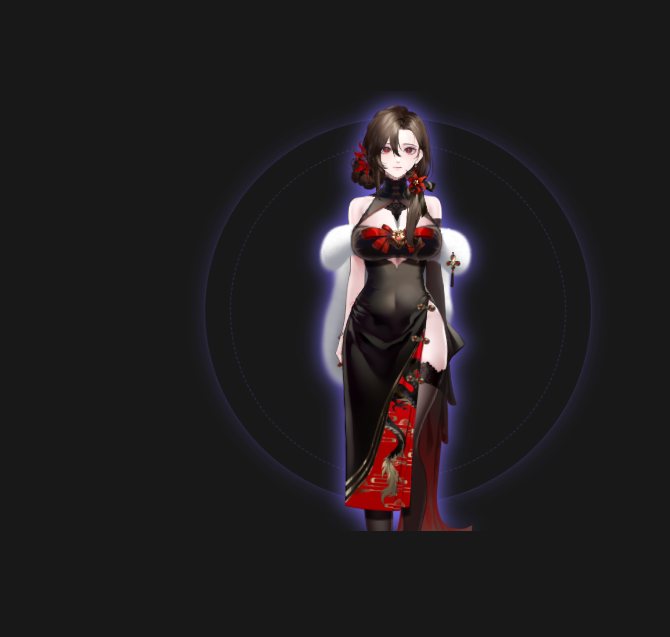
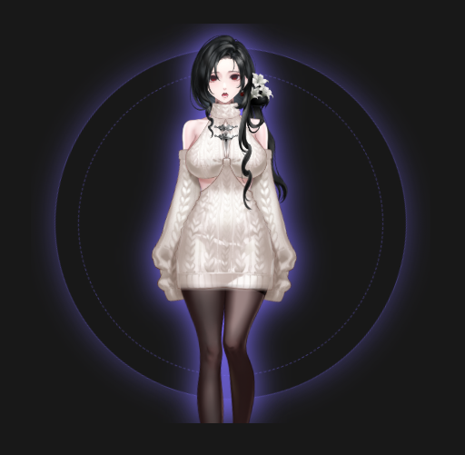

Codex response
Codex produces the answer and the skill watches the response stream.
LOCAL / FAST / ALIVE
A Codex skill that routes responses through a local Kokoro voice worker and turns the audio waveform into a living visual presence.
The response arrives as sound, then becomes geometry.
THE LOOP
Keep the agentic workflow you already use. Add a local voice and a small, expressive window that lets you feel when the system is thinking and speaking.
Codex produces the answer and the skill watches the response stream.
A warm local worker renders speech in chunks, without a cloud audio hop.
The same waveform drives playback and geometry in the presence window.
BUILT FOR ITERATION
Voice is optional, local, and configurable. The visual layer is intentionally small enough to live beside your editor and expressive enough to feel present.
Keep the model loaded between responses so the second sentence does not feel like a cold start.
Choose early playback for immediacy or completed rendering for a more polished read.
Keep the common CPU and NVIDIA paths open, with a maintained Intel Arc DirectML route.
VISUAL STATES
Two frames from the Strand Orb: a quiet baseline and the brighter geometric response that follows spoken audio.

Dim, breathing, and present while the local worker waits.

The strands brighten and deform with the spoken response.
OPEN RENDERER CONTRACT
The experimental v0.1 avatar API keeps the host small and the visual layer open. If Electron can render it from a local entry page, it can be an orb, a character, a creature, or a completely different visual language.
SVG, Canvas, WebGL, CSS, Live2D, VRM, or your own renderer are valid directions when bundled as a self-contained local avatar.
A bundle declares its identity and a relative HTML entry point. The project-local manager validates the bundle before the Electron host loads it.
Activity, playback lifecycle, amplitude, and spectral bands are the contract. The avatar decides whether those signals become strands, expressions, particles, or motion.
The renderer runs in the Electron window with context isolation and no Node.js integration. It receives presence signals, not assistant text or private tool output.
{
"schema": "codex-ai-presence/avatar/v0.1",
"id": "my-avatar",
"name": "My Presence",
"version": "0.1.0",
"entry": "index.html",
"capabilities": ["activity", "audio", "move-mode"]
}const stopAudio = window.orbApi.onAudioEvent((event) => {
if (event.type === "activity") setMode(event.state);
if (event.type === "state") setSpeaking(event.state === "speaking");
if (event.type === "audio") {
setAmplitude(event.amplitude);
setSpectrum(event.bands || []);
}
});
const stopMove = window.orbApi.onMoveMode((enabled) => {
document.body.classList.toggle("move-mode", enabled);
});Packets are samples, not frame commands. Smooth and decay values locally, and ignore unknown fields for forward compatibility.
activitystate: idle, thinking, tool, skill, cli, waiting, or errorstatestate: speaking or idle; brackets the actual playback clockaudioamplitude, rms, peak, bands: normalized 0..1 voice featuresmove-modeenabled: whether the user is holding the drag modifier

We are prototyping a separate avatar-renderer skill that can bring VTuber/Live2D models into the same local Electron presence window.
Audio and activity in. Avatar expressions and actions out. More soon.
FIELD NOTES
Watch the local installation, voice swap, and multi-instance workflow in action.
AUDIO / ON Turn on the player volume to hear Kokoro and follow the orb's motion as it speaks. FULL FRAME Ultra-wide recordings stay letterboxed so the Orb remains in view.
The complete install, setup, and first response in one take.
Change the local voice while the rest of the presence stays alive.
Show how the local voice layer follows the project it is attached to.
A short visual study of the Orb moving from idle into playback.
CONFIGURATION
The skill exposes the same matrix at runtime through configure.py show and configure.py interactive.
| SETTING | WHAT IT CHANGES | OPTIONS / DEFAULT |
|---|---|---|
| Voice / timbre | Changes the Kokoro voice used for responses. | Installed voice ID / bf_isabella |
| Speed | Trades natural pacing for faster or slower playback. | 0.5x–2.0x / 1.08x |
| Playback | Starts speaking as chunks arrive or waits for the complete waveform. | stream or quality / stream |
| Provider | Selects the local inference route. | cpu, cuda, or directml / cpu |
| Volume | Sets the main response volume; visible progress has its own ratio setting below. | 0–100% / 20% |
| Commentary volume | Sets visible progress commentary as a percentage of the main response volume. | 0–100% of main / 50% |
| Visible progress | Speaks visible tool and status commentary along with final answers. | on or off / off |
| Strand Orb | Shows or hides the optional waveform-reactive companion window. | on or off / optional |
| Scope | Controls which Codex rollouts may trigger the voice worker. | session, project, or off |
START HERE
Copy this prompt, paste it into the agent of your choice, and let the skill guide the setup and configuration conversation.
Source: walkingIssue/Codex-AI-presence
Install the `codex-voice` skill from walkingIssue/Codex-AI-presence, path skills/codex-voice. Ask me whether voice should apply only to this Codex session or to all sessions in this project. After setup, show me the full configuration matrix and ask which settings I want to change.